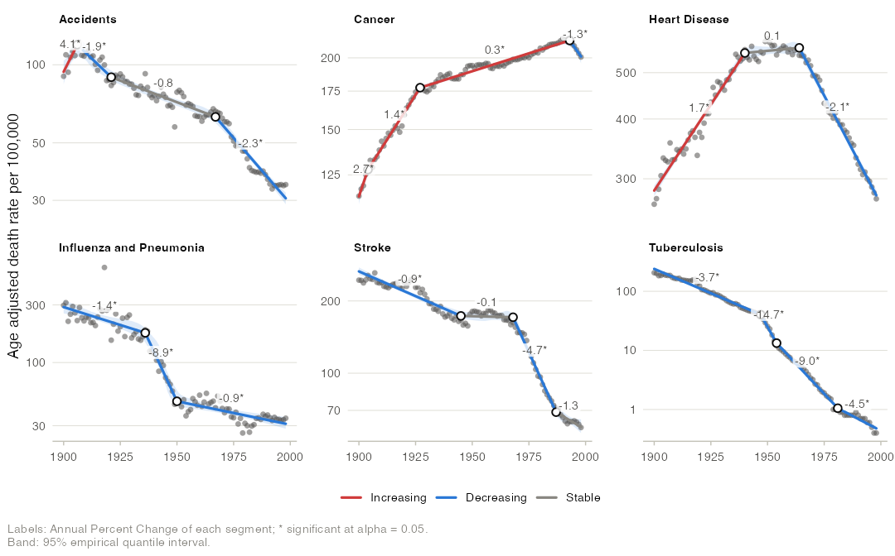

joinpoint fits joinpoint (segmented line) regression models for trend analysis (Kim et al. 2000). It finds the points in time at which a trend changes, summarizes each period by its annual percent change (APC), fixed periods by the average annual percent change (AAPC), and draws publication quality figures with ggplot2.
It covers the classical least squares joinpoint model with its error models, model selection rules and confidence intervals, together with the extensions of the literature: Poisson and logistic joinpoint models, continuous joinpoints, covariates, jump and comparability ratio models for coding changes, pairwise comparisons of trends, and clustering of age groups.
Documentation, articles and the function reference are on the package website: https://skhademioore.github.io/joinpoint/.

Installation
# Development version
# install.packages("remotes")
remotes::install_github("skhademioore/joinpoint")The grid search is compiled C++ (through Rcpp), so installing from source needs a C++ toolchain:
-
macOS: Xcode Command Line Tools (
xcode-select --install) - Windows: Rtools
-
Linux:
g++andmake(usually present by default)
Quick start
library(joinpoint)
fit <- joinpoint(us_mortality, x = year, y = rate, by = "cause", kmax = 3)
fit # joinpoints, APCs and AAPCs for each cause
apc(fit) # segment APCs with confidence intervals
aapc(fit) # average annual percent changes
joinpoints(fit) # joinpoint locations with confidence intervals
model_selection(fit) # selection statistics for every model
jp_table(fit) # formatted table for a manuscript
autoplot(fit, color_by = "trend", log_y = TRUE)
plot_apc(fit)
plot_aapc(fit)What is covered
| Method | Function or argument | Reference |
|---|---|---|
| Rates, age adjusted rates, proportions, percents, counts, other values |
joinpoint(type = ), age_adjust()
|
|
| Linear and log-linear models | log = |
Kim et al. (2000) |
| Constant variance, standard errors, Poisson variance | variance = |
|
| First order autocorrelated errors (estimated or given), covariance matrix |
autocorrelation =, vcov =
|
|
| Exhaustive grid search with placement constraints and points between observations | jp_control(min_obs_end, min_obs_between, n_grid) |
Lerman (1980) |
| Continuous joinpoints, exact least squares | continuous = TRUE |
Hudson (1966) |
| Poisson and logistic joinpoint models, exact maximum likelihood, optional quasi-likelihood dispersion |
family =, overdispersion =
|
Czajkowski et al. (2008) |
| Covariates such as seasonal terms | covariates = |
|
| BIC, BIC3, weighted BIC, data dependent selection | method = |
Kim et al. (2023) |
| Modified BIC | method = "mbic" |
Zhang and Siegmund (2007) |
| Sequential permutation test | method = "permutation" |
Kim et al. (2000) |
| Sequential Monte Carlo likelihood ratio test | method = "lrt" |
Czajkowski et al. (2008) |
| Early stopping of the Monte Carlo tests | jp_control(n_exceed = ) |
Besag and Clifford (1991) |
| Minimum APC difference worth detecting | jp_control(madwd = ) |
|
| Parametric intervals: APC, AAPC, joinpoint location | ci_method = "parametric" |
Clegg et al. (2009); Lerman (1980) |
| Empirical quantile intervals and p values | ci_method = "empirical" |
Kim et al. (2017, 2022) |
| AAPC for the full range, last N observations and custom ranges | jp_control(aapc_full, aapc_last, aapc_ranges) |
Clegg et al. (2009) |
| Exclusion of data points, shifted x values |
exclude =, shift =
|
|
| Jump model and comparability ratio model |
jump =, comparability_ratio =
|
Chen et al. (2020) |
| Pairwise tests of parallelism and coincidence, AAPC comparison, multiplicity adjustment | jp_compare() |
Kim et al. (2004) |
| Multi-group clustering of age groups | jp_cluster() |
|
| Model estimates, covariance, goodness of fit (R squared, Durbin-Watson), data and export tables |
model_estimates(), vcov(), model_selection(), as.data.frame(), jp_export()
|
Not covered: Bayesian joinpoint models and joinpoint models for survival or complex survey data.
The grid search is written in C++ and evaluates each candidate model from cross products only, so permutation tests and empirical quantile resampling over thousands of data sets run in seconds.
Key functions
| Function | Purpose |
|---|---|
joinpoint(), jp_control()
|
Fit joinpoint models; search, selection and interval settings |
apc(), aapc(), joinpoints()
|
Segment APCs, AAPCs and joinpoint locations with confidence intervals |
model_selection(), model_estimates(), jump_estimates()
|
Selection statistics and tests, coefficients, jump and comparability ratio |
jp_table() |
Publication table of trends |
coef(), vcov(), fitted(), residuals(), predict(), as.data.frame()
|
Standard model methods |
jp_compare() |
Pairwise tests of parallelism and coincidence, AAPC comparisons |
jp_cluster(), age_adjust()
|
Clustering of contiguous age groups; direct age adjustment |
jp_export() |
Every result table as delimited text |
autoplot(), plot_apc(), plot_aapc(), plot_models(), plot_selection(), plot_residuals()
|
Figures |
theme_joinpoint(), scale_color_joinpoint(), scale_fill_joinpoint()
|
Theme and color scales of the figures |
Validation
The test suite checks the package against published analyses and independent computations:
- the 24 models of the joinpoint tutorial of van Doren (2024) on the US mortality data: every joinpoint location, and every published fitted value to its two decimals except eight transcription errors and eight cells inconsistent with their neighbors at the second decimal (each listed in the test); and the selections of its permutation test;
- the prepregnancy BMI analysis of Khademioore et al. (2026, Table 4): the BIC values, the joinpoint, the slopes, the segment p values and the slope change with its p value; the joinpoint interval is reproduced by the conservative variant of the parametric interval, and the slope intervals are not (they imply more degrees of freedom than the p values);
- brute force maximum likelihood for Poisson and binomial fits, fine grids for continuous joinpoints, and
lm()for covariate adjustment.
Vignettes
Each vignette tells one analysis from question to figure. Read them on the package website, or with vignette(package = "joinpoint") after installation, in reading order:
Getting started
-
vignette("joinpoint"): a century of United States mortality, from a first fit to a manuscript table -
vignette("published-analysis"): reproducing a published analysis of prepregnancy BMI in Ontario, quantity by quantity
Methods
-
vignette("model-selection"): how many joinpoints? The selection rules, the permutation test, and joinpoints too small to matter -
vignette("uncertainty"): how certain is a trend? Error models and parametric versus empirical quantile intervals -
vignette("comparing-groups"): did two trends move together? Tests of parallelism and coincidence -
vignette("coding-changes"): breaks that are not trends, from outliers to coding changes -
vignette("clustering"): which age groups share a trend? Age adjustment and clustering -
vignette("extensions"): counts, seasons and joinpoints between observations
Graphics
- Graphics gallery (website only): every figure the package draws, and how to adapt it for a paper, a slide or a report
References
Besag J, Clifford P (1991). Sequential Monte Carlo p-values. Biometrika 78:301-304.
Chen HS, Zeichner S, Anderson RN, Espey DK, Kim HJ, Feuer EJ (2020). The joinpoint-jump and joinpoint-comparability ratio model for trend analysis with applications to coding changes in health statistics. Journal of Official Statistics 36:49-62.
Clegg LX, Hankey BF, Tiwari R, Feuer EJ, Edwards BK (2009). Estimating average annual percent change in trend analysis. Statistics in Medicine 28:3670-3682.
Czajkowski M, Gill R, Rempala G (2008). Model selection in logistic joinpoint regression with applications to analyzing cohort mortality patterns. Statistics in Medicine 27:1508-1526.
Hudson DJ (1966). Fitting segmented curves whose join points have to be estimated. Journal of the American Statistical Association 61:1097-1129.
Khademioore S, Darling EK, D’Souza R, Muraca GM, Guo Y, Anderson LN (2026). Prepregnancy body mass index in Ontario from 2012 to 2022: a population-based descriptive study. Canadian Journal of Public Health.
Kim HJ, Fay MP, Feuer EJ, Midthune DN (2000). Permutation tests for joinpoint regression with applications to cancer rates. Statistics in Medicine 19:335-351.
Kim HJ, Fay MP, Yu B, Barrett MJ, Feuer EJ (2004). Comparability of segmented line regression models. Biometrics 60:1005-1014.
Kim HJ, Luo J, Chen HS, et al. (2017). Improved confidence interval for average annual percent change in trend analysis. Statistics in Medicine 36:3059-3074.
Kim HJ, Chen HS, Byrne J, Wheeler B, Feuer EJ (2022). Twenty years since Joinpoint 1.0: two major enhancements, their justification, and impact. Statistics in Medicine 41:3102-3130.
Kim HJ, Chen HS, Midthune D, et al. (2023). Data-driven choice of a model selection method in joinpoint regression. Journal of Applied Statistics 50:1992-2013.
Lerman PM (1980). Fitting segmented regression models by grid search. Journal of the Royal Statistical Society, Series C 29:77-84.
van Doren T (2024). Estimating time points of significant change in cause-specific mortality: joinpoint regression in R. The Denominator. doi:10.6069/JK1Y-7Z16
Zhang NR, Siegmund DO (2007). A modified Bayes information criterion with applications to the analysis of comparative genomic hybridization data. Biometrics 63:22-32.
Citing joinpoint
citation("joinpoint")Releases will be archived on Zenodo with a citable DOI (the DOI badge appears after the first release). The repository ships machine-readable citation and software metadata for FAIR harvesters:
-
CITATION.cff: Citation File Format (GitHub “Cite this repository”, Zenodo). -
codemeta.json: CodeMeta 2.0 software metadata crosswalk. -
.zenodo.json: Zenodo deposit metadata (author, ORCID, license, related identifiers). -
ro-crate-metadata.json: RO-Crate 1.1 packaging and provenance. -
inst/CITATION: the R-level citation (citation("joinpoint")).
All carry the GPL-3.0-or-later SPDX identifier and the author’s ORCID.
Authors
- Sahar Khademioore (author, maintainer)
Acknowledgments
Portions of the package code, documentation, and vignettes were drafted and reviewed with the assistance of large language models: Anthropic’s Claude Opus 5.5 and Fable 5.1 and OpenAI’s ChatGPT 6 Astra. All methodological choices, design decisions, and the final review and validation were performed by the author, who takes responsibility for the package’s contents.
License
GPL (>= 3). See LICENSE.md for the full license text.